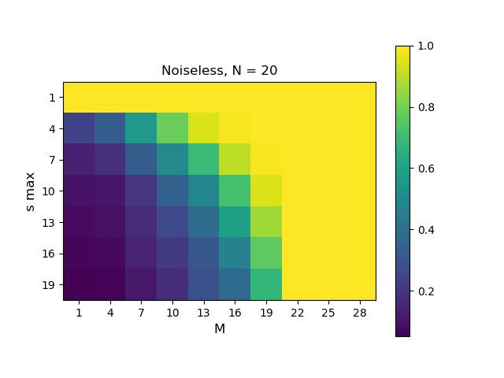
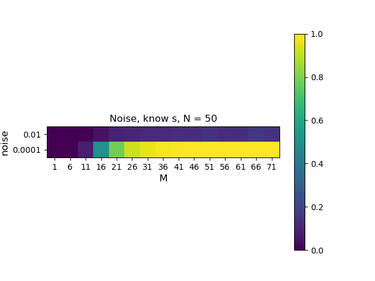
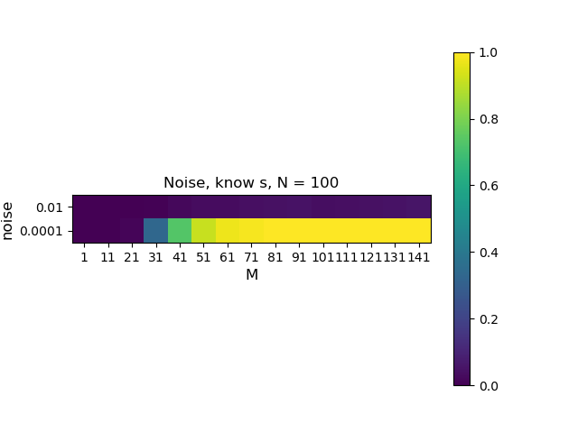
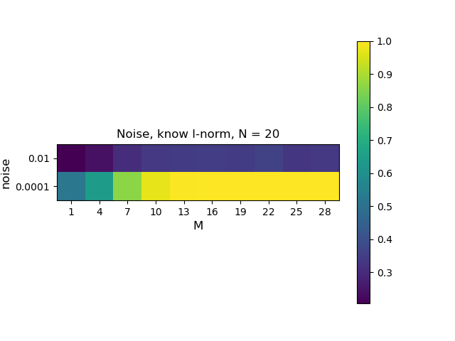
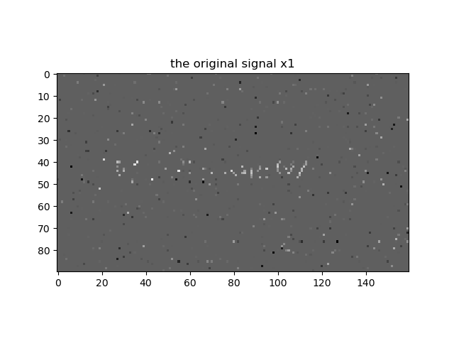
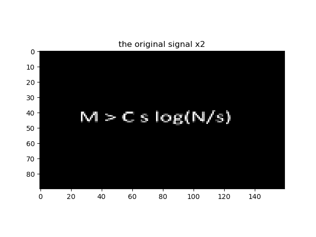

Programming assignment
This is the report of the programming assignment: Finding sparse solution via Orthogonal Matching Pursuit (OMP). I recommend to read it in .html format (so you can easily link to the code). PDF version is also available.
1. Performance Metrics:
Normalized Error is calculated in function 'normalized_error' in omp.py
def normalized_error(x, x_): return norm(x - x_, ord=2) / norm(x, ord=2)
2. Experiment setup and omp algorithm:
Experiments setup and omp algorithm are in omp.py

- OMP algorithm pesudo code
xdef OMP(A, y, iteration, acc_tolerance=0.001): """ Orthogonal Matching pursuit algorithm :input A: measurement matrix M*N :input y: measurement vector M*1 :output x: sparse vector N*1 """ r = y # initialize the residual as y M, N = A.shape x = np.zeros(N) Lambdas = [] i = 0 # Control stop interation with norm thresh or sparsity
while norm(r, ord=2) > acc_tolerance and i < iteration: scores = A.T.dot(r) # Compute the score of each atoms Lambda = np.argmax(abs(scores)) # Select the atom with the max score Lambdas.append(Lambda) An = A[:, Lambdas] # All selected atoms form a basis
# least square solution: x = (A^T A)^(-1) A^T y x[Lambdas] = np.linalg.pinv(An).dot(y) x = x.reshape(N, -1) r = y - A.dot(x) # Calculate the residual i += 1 return x- OMP algorithm in Python
3. Noiseless case:
The noiseless case is in noiseless.py. The experiment results are as follows:
We implement the OMP algorithm for 2000 times with the parameter required in 5.3, with random realizations of A. The noiseless transition map of this scenario is shown below: （color value refers to the success rate）

- N = 20, M from 1 to 30, s from 1 to 20, both with an interval of 3

- N = 50, M from 1 to 75, s from 1 to 50, both with an interval of 5

- N = 100, M from 1 to 150, s from 1 to 100, both with an interval of 10
As shown in the figures above, the performance of OMP algorithm is better with the increase of M and decrease of s, which shows that the OMP algorithm prefers sparse matrix s. What's more, we can observe an obvious change near $M=N$, over which the OMP algorithm will remain an 100% success rate.
4. Noisy case:
we input parameter 'know_s=True' or 'know_s=False' to distinguish the two requirements. Detailed implementation can be viewed in the code files.
4.1 Noisy case with sparsity $s$ is known
The noisy case with sparsity s is known is written in code file under_noise1.py. Here we run cases with N = 20, 50, 100. And we test the OMP with two different noises: 1e-2 and 1e-5. Considered that OMP algorithm is a sparse solver, we choose s = N // 10. The transition maps of success rate regarding noise and M are shown in figure 4.1.

- N = 20, M = [1, 20, 3], noise = 1e-2, 1e-4

- N = 20, M = [1, 50, 3], noise = 1e-2, 1e-4

- N = 100, M = [1, 100, 5], noise = 1e-2, 1e-4
4.2 Noisy case with sparsity $s$ is unknown and $||n||_2$ is known.
The noisy case with sparsity s is unknown and $||n||_2$ is known is written in code file under_noise2.py. Here we run cases with N = 20, 50, 100. And we test the OMP with two different noises: 1e-2 and 1e-5. Considered that OMP algorithm is a sparse solver, we choose s_max = N // 10. The transition maps of success rate regarding noise and M are shown in figure 4.2.

- N = 20, M = [1, 20, 3], noise = 1e-2, 1e-4

- N = 20, M = [1, 75, 5], noise = 1e-2, 1e-4

- N = 100, M = [1, 150, 10], noise = 1e-2, 1e-4
Both 4.1 and 4.2 show that the successful rate increase with the decrease of noise and increase of M. Under large noise cases, even with $M > N$ we can not achieve a good success rate.
5. Decode a Compressed Signal
We implement this part with the 'omp.py' function we write in omp.py. Implementation is in decode_message.py
5(a) Can You Guess?
Unfortunately, No.
5(b) Recover the Signal
We recovered the original signal from $Y_1, Y_2, Y_3$ respectively and obtained the $X_1, X_2, X_3$. The results are shown below:

- A1 size: (960, 14400); Y1 size: (960, 1); X1 size: (14400, 1)

- A2 size: (1440, 14400); Y2 size: (1440, 1); X2 size: (14400, 1)

- A3 size: (2880, 14400); Y2 size: (2880, 1); X2 size: (14400, 1)
5(c) Analysis
We can see that the second and third figures are far more clear than the first one. Since in the second and third cases, the row number of matrix A is larger, and we have concluded empirically that the OMP algorithm works better under large M (row number) and small s(support size) condition.
5(d) Guess the Meaning of the picture
The figure is a formula:
This formula shows the same pattern as the experiments. For a larger N, you generally need a larger M to recover the x signal.
Worth mentioning, this formula assembles resemble the Shannon theorom:
I guess that the function is a theoretical bound of OMP/compressed sensing.